FlightCal 사용 설명서
FlightCal은 조종사를 위한 휴대용 비행 컴퓨터입니다. 클래식 E6-B 계산기를 비롯해 단위 변환, 환율, 공학용 계산기, 홀드오버 타임, 공항 날씨, 전 세계 기상 지도, 용어 사전, 스톱워치를 하나의 앱에 담았고, 모든 화면이 동일한 키패드로 동작합니다.
- 1. 시작하기
- 2. 키패드
- 3. E6-B
- 4. CONV
- 5. CURR
- 6. CALC
- 7. HOT
- 8. AIRPORT
- 9. MAP
- 10. DICT
- 11. SET
- 12. STOP / TIMER
- 13. 데이터와 오프라인
1. 시작하기
모든 화면의 구성은 같습니다. 상단 왼쪽에 메뉴 이름, 오른쪽에 현재 UTC 시각, 가운데에 값 입력 줄, 하단에 키패드가 놓입니다. 선택된 줄이 강조되고 계산 결과는 초록색으로 표시됩니다.
헤더 아래 배너에는 30일 체험 기간과 종료일이 표시됩니다. 예를 들어
30 DAY TRIAL · ENDS 2026.12.09 와 같이 나오고, 그 아래
TAP TO UNLOCK 을 누르면 정식 버전을 구매할 수 있습니다.
값 입력하기
- LCD 화면을 세로로 스와이프하거나(36px 이상), 줄을 직접 탭해 커서를 옮깁니다.
- 줄을 탭하거나 = 를 누르면 편집이 시작되고, 숫자를 입력해 값을 넣습니다.
- C 는 입력 전체 삭제, BKSP 는 한 글자 삭제입니다.
- +− 는 부호 전환, . 는 소수점 입력입니다.
시간 줄은 콜론을 넣어 입력해도 되지만, 숫자만 입력해도 됩니다. 숫자는 오른쪽부터
해석되어 4자리는 HHMM, 2자리는 분으로 처리됩니다. 즉 130 은
01:30, 0130 도 01:30 이 됩니다.
2. 키패드
두 개의 기능 줄은 항상 동일합니다. 아래 네 줄은 숫자 배열, QWERTY 배열, 한글 배열로 바뀌므로 공항 검색 같은 문자 입력도 키패드에서 바로 할 수 있습니다.
| 줄 | 키 |
|---|---|
| 첫째 줄 | FLT CONV CURR CALC HOT |
| 둘째 줄 | MAP AIRPORT STOP/TIMER DICT SET |
| 숫자 블록 | C BKSP √ +− × − + ÷ = 와 숫자 0–9. |
각 기능키가 여는 화면입니다.
| 키 | 기능 |
|---|---|
| FLT | E6-B 메뉴. 14가지 비행 계산 기능이 있습니다. |
| CONV | 단위 변환 메뉴. 11개 카테고리입니다. |
| CURR | 환율 계산기와 12개 통화 프리셋. |
| CALC | 계산기. Standard, Scientific, Time (HMS), Duty 4가지 모드입니다. |
| HOT | 홀드오버 타임 계산기와 홀드오버 타이머. |
| MAP | 기상 지도. 키에는 RADAR 로 인쇄되고 MAP 으로 표시됩니다. |
| AIRPORT | 공항 정보. 실시간 날씨, TAF, NOTAM, 현지 시각, 일출·일몰, 저장한 공항을 모아 보여 줍니다. 키에는 DUTY 로 인쇄되고 AIRPORT 로 표시됩니다. |
| STOP / TIMER | 스톱워치와 카운트다운 타이머. 두 이름이 함께 표시됩니다. |
| DICT | 항공 용어 사전. 어느 화면에서든 사전을 엽니다. |
| SET | 설정(그리고 아래 설명하는 다른 역할). |
커서 이동과 확정
- LCD를 세로로 스와이프하거나 줄을 탭해 커서를 옮깁니다.
- = 또는 줄 탭으로 확정·편집합니다.
- BKSP 는 BACK 역할을 겸합니다. 편집 중에는 한 글자를 지우고, 그렇지 않으면 이전 화면으로 돌아갑니다.
SET 키의 역할 전환
오른쪽 아래 키는 상황에 따라 역할이 바뀝니다.
| 위치 | 키 라벨 | 동작 |
|---|---|---|
| 메뉴 / 설정 | SET | 설정을 엽니다. |
| E6-B 또는 단위 변환 하위 화면 | UNIT/CONV | 편집 중인 줄의 단위군을 전환합니다. 예: ft ↔ m, °C ↔ °F, kg ↔ lbs. |
| 환율 계산기 | ⇄ | 기준/대상 통화를 맞바꿉니다. |
| 공학용 계산기 | INV | 역함수 입력을 켭니다. |
| 스톱워치 / 타이머 | C / BKSP | C 는 시작·일시정지, BKSP 는 리셋입니다. |
물리 키보드
하드웨어 키보드를 연결하면 Enter 는 확정, Esc 는 뒤로, ↑ ↓ 는 커서 이동, Backspace 는 BKSP, = 는 계산으로 동작합니다.
3. E6-B (FLT)
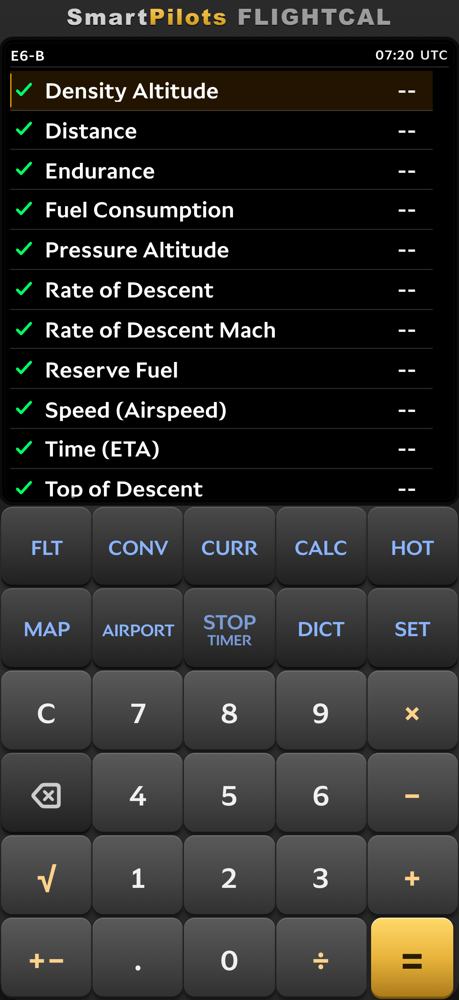
E6-B 메뉴에는 전통적인 비행 컴퓨터 기능이 모여 있습니다. 커서로 항목을 고르고 = 로 엽니다. 각 기능은 짧은 입력 줄 목록으로 되어 있고, 값을 채우면 결과가 초록색으로 나타납니다. 여러 모드가 있는 화면은 헤더 바로 아래에 모드 탭이 표시됩니다.
3.1 Density Altitude (밀도고도)
줄: Press Alt(기압고도), OAT(외기온도), Dens Alt(밀도고도). 기압고도와 외기온도를 넣으면 밀도고도가 계산됩니다. 기압고도 줄에서 UNIT/CONV 는 ft ↔ m, OAT 줄에서는 °C ↔ °F 를 전환합니다.
3.2 Distance (거리)
줄: Dist(NM), Dur(HMS), GS(KT). 세 값 중 두 개를 넣으면 나머지 하나가 계산됩니다. 거리, 소요시간, 지대속도 중 필요한 값을 구할 때 사용합니다. 소요시간은 시·분 단위로 입력합니다.
3.3 Endurance (항속시간)
연료 무게(Wt)와 연료 소모율(Rate)을 넣으면 항속시간이 결과로 나옵니다. 연료 화면의 세 모드 중 하나이므로, 메뉴로 돌아가지 않고 Fuel Burn이나 Fuel Rate로 바로 전환할 수 있습니다.
3.4 Fuel Consumption (연료 소모율)
같은 연료 화면의 Fuel Rate 모드입니다. 연료 무게와 소요시간을 넣으면 소모율이
LB/HR 로 계산되고, 설정에서 무게 단위를 kg으로 두면 KG/HR 로
표시됩니다.
3.5 Pressure Altitude (기압고도)
줄: Fld Elev(공항 표고), Altim(고도계 설정),
Press Alt(기압고도). 고도계 설정 기본값은 1013.25 입니다.
UNIT/CONV 으로 고도계 설정은 hPa ↔ inHg, 표고는 ft ↔ m 로
바꿉니다.
3.6 Rate of Descent (강하율)
Climb / Descent 탭이 있고, 줄은 Rate, Alt Chg, GS, Fuel, Time, Dist, Burn 입니다. 단위는 FPM, FT, KT, LB·HR, HMS, NM, LBS 입니다. 강하율, 고도 변화, 지대속도를 넣으면 소요시간, 거리, 소모 연료가 함께 계산됩니다.
3.7 Rate of Descent Mach (마하 강하율)
줄: Mach, Angle(기본 3.0),
OAT(기본 15 °C / 59 °F), RoD, TAS,
Spd Sound. 마하수와 강하각을 넣으면 강하율(FPM), TAS, 해당 고도의
음속(KT)이 계산됩니다. OAT 줄은 °C ↔ °F 로 전환됩니다.
3.8 Reserve Fuel (예비연료)
줄: Req Fuel(소요연료), Rsv %(예비율), Alt Fuel(교체공항 연료), Hold Fuel(대기 연료), Conting(불확실성 연료), Reserve(예비연료 합계), Total Req(총 소요연료). 예비율 기본값은 15 %, 교체·대기 연료는 0 입니다. 불확실성 연료는 소요연료 × 예비율, 예비연료 합계는 불확실성 + 교체 + 대기, 총 소요연료는 소요연료 + 예비연료 합계입니다.
3.9 Speed (Airspeed) — 속도
모드 5개: Planned TAS, Actual TAS, Required CAS, Planned MACH#, Actual MACH#. Planned TAS는 CAS, OAT, 기압고도를 넣어 TAS, TAT, Mach를 구합니다. Actual TAS는 OAT 대신 TAT를 사용하고 OAT를 결과로 보여 줍니다. Required CAS는 반대로 TAS에서 CAS를 역산합니다. 두 Mach 모드는 Mach와 온도만으로 계산합니다.
3.10 Time (ETA) — 시간
줄: Dist(NM), GS(KT), Time(HMS). 거리와 지대속도로 소요시간을 구하거나, 정해진 시간 안에 도착하기 위해 필요한 지대속도를 구할 때 사용합니다.
3.11 Top of Descent (강하개시점)
줄: Alt, Tgt, GS,
Path(기본 3.0°), Dist,
Time, ROD. 현재 고도, 목표 고도, 지대속도를 넣으면
강하를 시작할 거리와 시각, 필요한 강하율을 알려 줍니다.
3.12 Wind Component (바람 성분)
줄: RWY, WDIR, WSPD, HEAD, TAIL, CROSS. 활주로 방위, 바람 방향, 풍속을 넣으면 정풍·배풍·측풍 성분이 계산되고, 측풍은 좌/우 방향까지 표시됩니다.
3.13 Fuel Uplift (주유량)
줄: Tot Req(총 소요), Current(현재 탑재),
Density(밀도, 기본 6.7 lb/gal), Uplift,
Uplift Gal, Tot Onbd. 소요연료에서 현재 탑재량을 뺀
주유량을 계산하고, 주어진 밀도로 갤런 환산값과 주유 후 총 탑재량을 함께 보여 줍니다.
3.14 Cold Temp Correction (저온 고도 보정)
줄: Indicated(지시고도), Fld Elev(공항 표고), OAT, ΔISA, Corr(보정량), Corr Alt(보정고도). 저온에서 지시고도를 실제 고도로 보정해 주며, ISA 편차와 보정고도를 함께 표시합니다. 고도는 ft ↔ m, 온도는 °C ↔ °F 로 전환됩니다.
4. CONV — 단위 변환
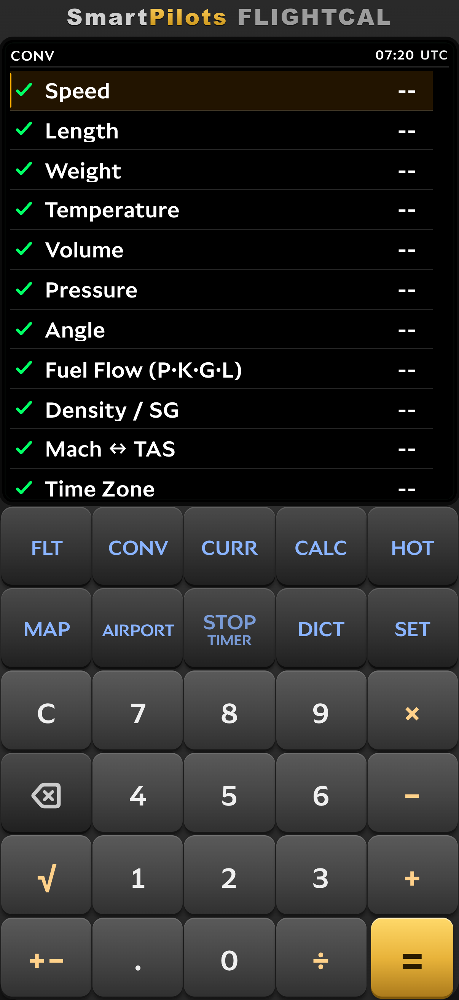
카테고리를 고르면 변환 화면에 네 줄이 나옵니다. 입력값, SET UNIT 줄, CONV UNIT 줄, Result 입니다. 단위 줄로 커서를 옮기고 UNIT/CONV 또는 탭으로 다른 단위를 선택하면 결과가 즉시 갱신됩니다.
| 카테고리 | 선택 가능 단위 | 기본 조합 |
|---|---|---|
| Speed | m/s, kt, km/h, mph, fps, Mach | kt → m/s |
| Length | m, km, ft, NM, mi, in | NM → ft |
| Weight | kg, lb, ton (US) | lb → kg |
| Temperature | °C, °F, K | °F → °C |
| Volume | L, gal (US), gal (imp) | gal (US) → L |
| Pressure | hPa, inHg, mb, psi | inHg → hPa |
| Angle | °, rad, grad, %slope | ° → %slope |
| Fuel Flow (P·K·G·L) | L/hr, gal/hr, lb/hr, kg/hr | gal/hr → lb/hr |
| Density / SG | kg/L, SG, lb/gal (US), lb/gal (imp) | lb/gal (US) → kg/L |
| Mach ↔ TAS | Mach, 온도, TAS를 한 화면에서 계산 | — |
| Time Zone | 시간대 간 현지 시각 변환 | — |
온도, 무게, 압력, 거리의 기본 조합은 설정에서 고른 단위를 따릅니다. °C와 hPa를 쓰는 조종사라면 항상 익숙한 쪽에서 변환이 시작됩니다.
5. CURR — 환율
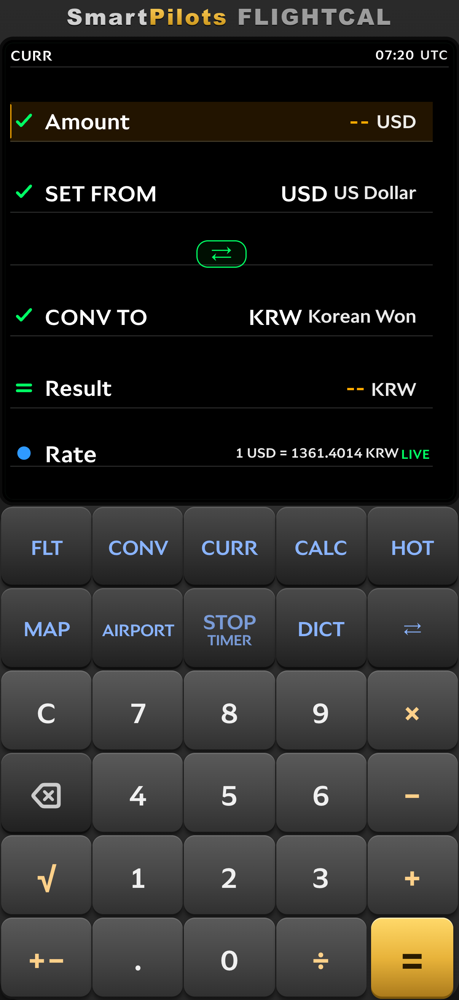
변환 화면은 다섯 줄입니다. Amount에 금액을 입력하고
SET FROM과 CONV TO를 정하면
Result가 초록색으로 표시됩니다. 두 통화 줄 사이의 ⇄ 키를
누르면 방향이 뒤집히고, Rate 줄에는
1 USD = 1334.5069 KRW 처럼 현재 시세가 나옵니다.
통화 줄에서 = 를 누르면 검색 가능한 통화 목록이 열립니다. 양쪽에 같은 통화를 선택할 수는 없으므로 항상 유효한 조합이 유지됩니다.
Rate 줄을 탭하면 시세 차트가 열리고, BKSP 이나 C 로 닫습니다. Rate 줄 끝의 상태 표시로 시세의 출처를 알 수 있습니다.
| 표시 | 의미 |
|---|---|
LIVE |
1분 이내에 새로 받아온 시세입니다. |
12m ago |
최근에 받은 시세입니다. 분 단위로, 이후에는 시간·분으로 표시됩니다. |
OFFLINE · CACHED 1D 3h |
네트워크가 없어 저장된 마지막 시세를 사용 중이며, 그 경과 시간을 보여 줍니다. |
DEFAULT · BUILT-IN |
저장된 시세가 없어 앱에 내장된 기준 환율을 사용합니다. |
CURR 메뉴에는 자주 쓰는 통화 12개의 프리셋도 있습니다. 선택하면 해당 통화 조합으로 설정된 변환 화면이 바로 열립니다.
USD → KRW · EUR → USD · USD → JPY · JPY → KRW · CNY → KRW · SGD → KRW · GBP → USD · HKD → KRW · THB → KRW · AED → USD · CAD → USD · AUD → USD
프리셋 목록은 기본 기준 통화(기본값 KRW, SET → Home Currency에서 변경 가능)를 중심으로 구성됩니다.
6. CALC — 계산기
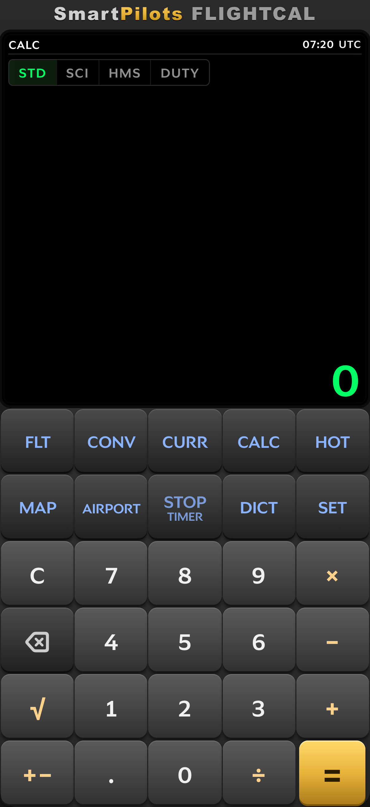
네 가지 모드가 한 화면을 공유하며 모드 세그먼트로 선택합니다. CALC 키를 누르면 STD → SCI → HMS → DUTY → STD 순서로 순환합니다.
6.1 STD
사칙연산 계산기입니다. 결과 위에 최근 계산 4건이 이력으로 남습니다. = 로 계산합니다.
6.2 SCI
공학용 모드에서는 기능키 라벨이 바뀝니다. DUTY = sin, HOT = cos, CURR = ln, FLT = log, CONV = x², MAP = 1/x, STOP = π, DICT = eˣ 입니다. SET 은 역함수용 INV 가 됩니다. 전용 키가 없는 함수(xʸ, ʸ√x, n!, tan)는 화면 안의 버튼으로 제공됩니다.
| 키 | 일반 | INV 사용 시 |
|---|---|---|
| DUTY | sin | sin⁻¹ |
| HOT | cos | cos⁻¹ |
| CURR | ln | eˣ |
| FLT | log | 10ˣ |
| CONV | x² | — |
| MAP | 1/x | — |
| STOP | π | — |
| DICT | eˣ | — |
| 화면 버튼 | xʸ / ʸ√x / n! / tan | tan⁻¹ |
6.3 HMS
시간 전용 계산기입니다. 콜론 키로 시·분·초를 입력하고 일반 숫자로 곱하거나 나누면 결과가 다시 시·분·초로 나옵니다.
6.4 DUTY
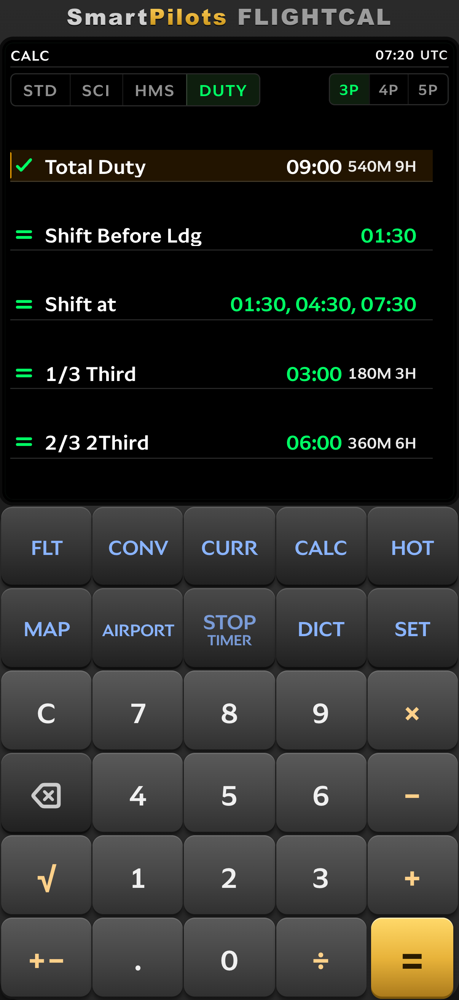
Duty(근무) 모드는 비행·근무 시간 계산기입니다. 승무원 구성을 고르고 시간을 입력하면 앱에 내장된 근무시간 제한을 적용해 결과를 보여 줍니다.
7. HOT — 홀드오버 타임
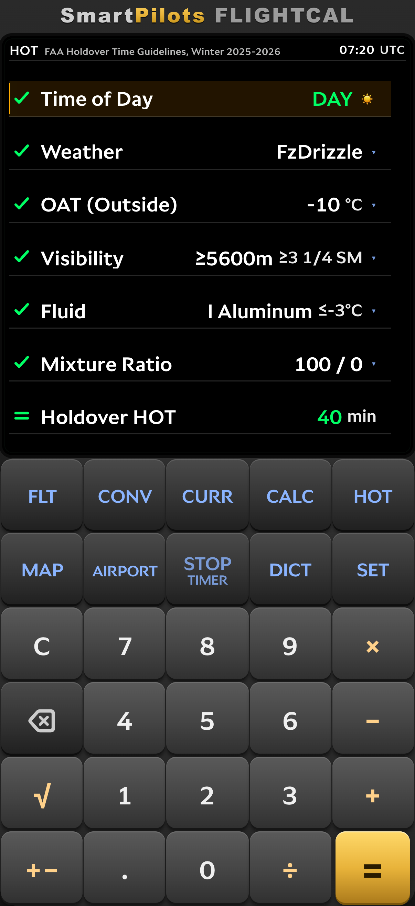
줄: Time of Day, Weather, OAT (Outside), Visibility, Fluid, Mixture Ratio, Holdover HOT.
- Time of Day는 DAY(06:00–19:00) / NIGHT(19:00–06:00)를 방향키 또는 탭으로 전환합니다.
- Weather, Visibility, Fluid, Mixture Ratio는 = 또는 탭으로 전체 목록을 엽니다.
- OAT는 정수 단위로 직접 입력하며 설정의 온도 단위를 따릅니다. UNIT/CONV 키로 °C ↔ °F 를 전환합니다.
날씨 목록은 시정·시간대·기온에서 자동으로 정해지는 AUTO 3계열과 METAR로 보고되는 16가지 조건을 제공합니다. 결과 줄에는 홀드오버 타임이 분 단위로 표시됩니다. 외기온도가 영상이면 제빙이 필요 없다는 안내가 나오고, 유체의 사용 온도 범위보다 낮으면 시간 대신 사용 불가로 표시됩니다.
결과 줄에서 = 를 누르거나 탭하면 계산된 시간이 미리 입력된 HOT Timer가 열립니다. 타이머는 카운트다운되며 0에 도달하면 3번 울립니다.
8. AIRPORT — 공항 정보
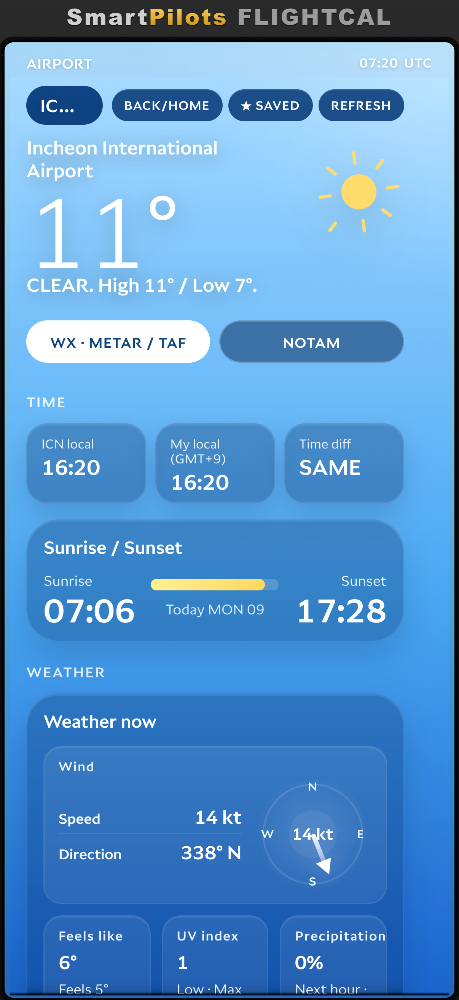
AIRPORT(DUTY 키)를 누르면 공항 페이지가 열립니다. ICAO 또는 IATA 코드로 검색합니다. BACK/HOME 버튼은 이전에 열었던 공항으로 돌아가고, ★ SAVE 는 공항을 저장하며(최대 4개), REFRESH 는 로딩 표시와 함께 데이터를 다시 불러옵니다.
탭은 WX · METAR / TAF 와 NOTAM 두 가지입니다.
8.1 날씨 탭
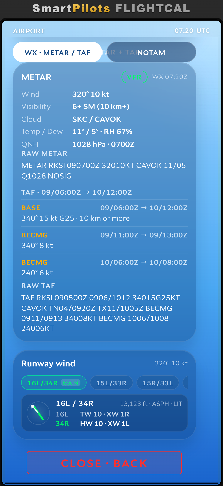
| 그룹 | 항목 |
|---|---|
| Time | 공항 현지 시각, 내 현지 시각(시간대 포함), 두 시각의 차이, 일출·일몰. |
| Weather now | 풍속·풍향과 나침반, 체감온도, 자외선 지수, 강수, 습도, 기압, 시정, 달의 위상. |
| 7-day forecast | 앞으로 일주일의 최고/최저 기온과 날씨 아이콘. |
| Airport | 위치, 표고, 시간대, 통화, 좌표, 위성 사진, 원문 METAR. |
| Flight weather | 해당 공항의 해독된 METAR·TAF와 원문 METAR / TAF. |
8.2 NOTAM 탭
- 헤더에 불러온 공고 수와 CRITICAL, WARN 개수가 표시됩니다.
- DECODE 를 켜면 원문 NOTAM이 쉬운 설명으로 펼쳐집니다.
- 필터: ALL, CRITICAL, WARN, INFO.
- 불러올 수 없으면 NOTAM UNAVAILABLE · RETRY 가 표시됩니다.
최근 조회 결과는 캐시되므로, 마지막으로 본 날씨와 NOTAM은 연결 없이도 확인할 수 있습니다.
9. MAP — 기상 지도
MAP(RADAR 키)은 위성 영상과 위험 요소 오버레이를 보여 줍니다. 지도는 20초마다 자동으로 갱신됩니다.
| 레이어 | 설명 |
|---|---|
| SAT | Esri 위성 영상 — 위성·항공 기본 지도. |
| CLOUD | NASA VIIRS 일일 전지구 영상. 확대하면 지역 정지궤도 위성(GOES-West / East, Himawari-9, Meteosat) 영상으로 대체됩니다. |
| RAIN | NASA IMERG 30분 전지구 강수율. |
| FCST | ECCC GDPS 전지구 강수 예보(레이더 아님). |
| WIND | ECCC GDPS 15 km 바람 속도와 풍향 기호. WIND ALT에서 고도를 선택합니다. |
| PROG | 상층 일정기압면 고도 예상도. PROG ALT에서 고도를 선택합니다. |
| SIGMET | 전지구 SIGMET 구역: 난류, 착빙, 뇌우, 화산재, 산악파, 열대저기압. |
| OPACITY | 오버레이 투명도를 조절합니다. |
타임라인 슬라이더로 예보·관측 시각을 이동할 수 있습니다. 버튼으로 BACK TO FLT, FIND AIRCRAFT / AIRPORT, TAP TO REFRESH 와 밝은/어두운 지도 전환을 제공합니다.
10. DICT — 항공 용어 사전
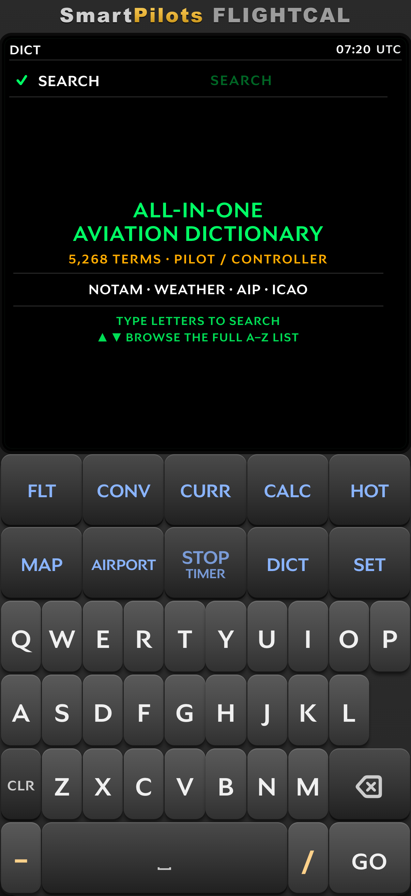
사전은 ICAO, NOTAM, 날씨, AIP 용어 5,268개를 담은 완전 오프라인 사전입니다. 용어의 일부만 입력해도 검색되며 목록이 입력하는 대로 좁혀집니다. 커서로 A–Z 전체 목록을 페이지 단위로 넘겨 볼 수 있습니다.
태그 필터는 NOTAM, WEATHER, AIP, ICAO 입니다. 숫자 키패드는 T9 문자 입력으로 동작하며(2 = ABC, 3 = DEF …) SET 은 숫자 배열로 돌아가는 ABC 가 됩니다. 항목에서 = 를 누르면 전체 설명이 열리고 BKSP 로 목록으로 돌아옵니다.
11. SET — 설정
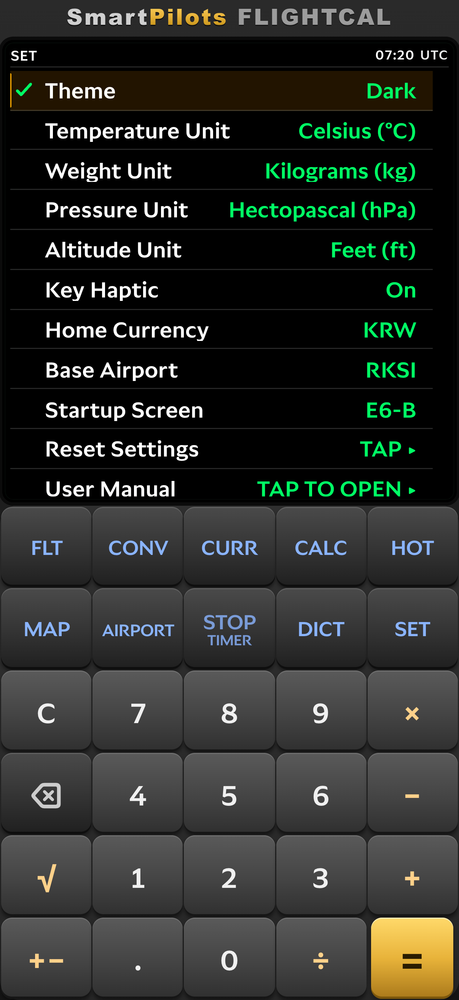
| 설정 | 옵션 / 의미 |
|---|---|
| Theme | Auto (System), Light, Dark, Dusk, Night. |
| Temperature Unit | Celsius (°C) 또는 Fahrenheit (°F). |
| Weight Unit | Kilograms (kg) 또는 Pounds (lbs). |
| Pressure Unit | Hectopascal (hPa) 또는 Inches Hg (inHg). |
| Altitude Unit | Feet (ft) 또는 Meters (m). |
| Key Haptic | 키 입력 진동 피드백 켜기/끄기. |
| Home Currency | 환율 계산기와 공항 FX에서 기준이 되는 통화. 기본값 KRW. |
| Base Airport | 4자리 ICAO 코드. 입력 전에는 not set 으로 표시됩니다. |
| Startup Screen | 앱을 켤 때 표시할 화면: E6-B, AIRPORT, DUTY, CALC, CONV, CURR, HOT, DICT. |
| Reset Settings | 설정을 기본값으로 되돌립니다. |
| User Manual | 브라우저에서 온라인 사용 설명서를 엽니다. |
| Version | 설치된 앱 버전과 빌드 번호. |
단위 설정은 앱 전체에 적용됩니다. E6-B 결과, 연료 무게, 고도계 설정, 홀드오버 온도 모두 이 설정을 따릅니다.
12. STOP / TIMER
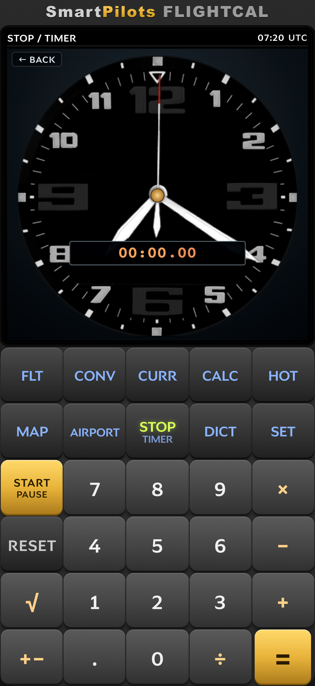
타이머 화면에는 두 가지 도구가 있고 서로 전환합니다: STOPWATCH 와 COUNTDOWN.
- C 로 시작·일시정지합니다.
- BKSP 로 0으로 리셋합니다.
- 카운트다운 모드에서는 다이얼을 돌려 시간을 설정하며(한 바퀴 = 60분), 최대 99:59:59입니다.
아날로그 크로노그래프 다이얼과 디지털 표시가 함께 나와 조종석에서 한눈에 확인할 수 있습니다. 카운트다운이 0에 도달하면 880 Hz로 3번 울립니다.
13. 데이터, 캐시, 체험판
- 설정과 마지막 입력값, 캐시된 날씨·NOTAM·환율은 기기에 저장되므로, 가능한 범위에서는 연결 없이도 앱이 동작합니다.
- 날씨, NOTAM, 환율은 새로 고칠 때 네트워크가 필요합니다. 오프라인이면 마지막 캐시 값을 표시하고 그 상태를 함께 알려 줍니다.
- FlightCal은 30일 체험판으로 동작하며, 이후 App Store 또는 Google Play를 통해 정식 버전을 사용할 수 있습니다. 결제 처리 방식은 개인정보 처리방침에 설명되어 있습니다.
문의
질문, 오류 신고, 기능 제안:
SmartPilots
이메일: smartpilot@smartpilot.co.kr
View the English guide